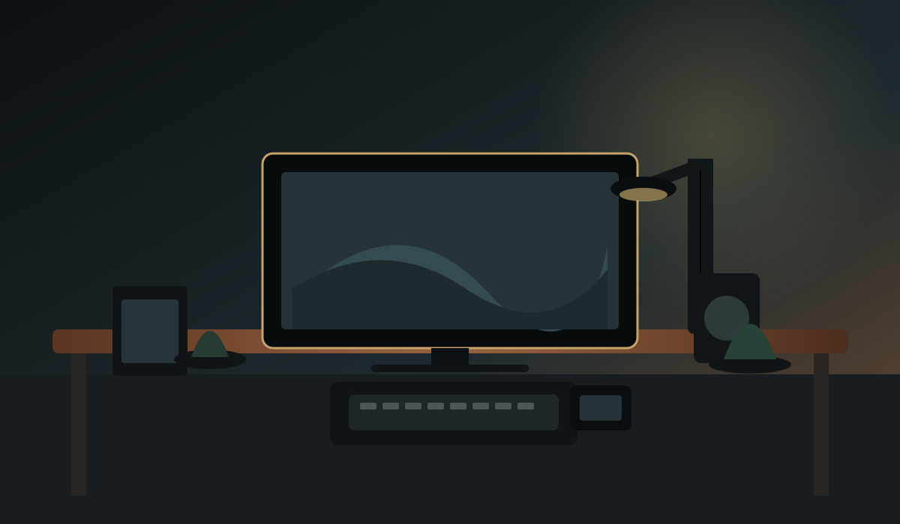
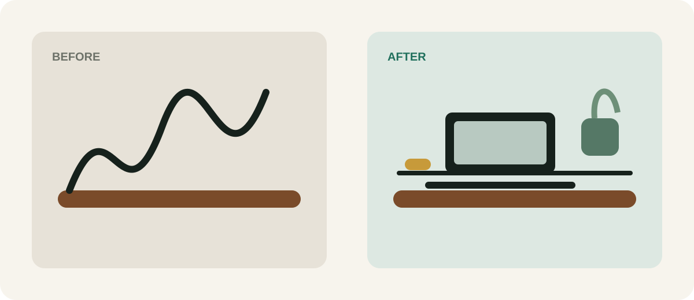

Small home-office ideas for tiny apartments
Setups under 1m² that don't feel cramped.
DESK ATLAS · MODERN WORKSPACE EDITORIAL
Premium desk accessories and setup ideas chosen for one reason: they should make your workspace calmer, cleaner and easier to use.


THE DESK ATLAS APPROACH
The right accessories don't just decorate a desk. They remove friction: cables disappear, screens sit at the right height, lighting improves, and the things you use every day have a deliberate home.
THE GUIDES
Start with the guide we're building first, then come back for focused setups by budget, room size and work style.
Walnut organizers, premium lighting, monitor arms, hidden storage, desktop audio and ergonomic upgrades — with the tradeoffs up front.
Read the complete guide →Includes Amazon affiliate links. Prices and availability can change.
Setups under 1m² that don't feel cramped.
Everything on the desk, itemized and justified.
Trays, sleeves and clips ranked by effort.
Practical upgrades for a more comfortable setup.
QUICK ANSWERS
A premium desk setup balances materials, proportion, lighting, ergonomics and cable control. The goal isn't to own the most expensive accessories; it's to remove friction and keep the visible workspace intentional.
Start with the problem you notice every day. For visible clutter, fix cable management and storage. For discomfort, address monitor height, keyboard position and your chair. For a visually unfinished desk, start with lighting and one strong organizational piece.
Some links are affiliate links, including Amazon links. Desk Atlas may earn a commission if you purchase through them, at no extra cost to you. Recommendations are written to explain both the benefit and the tradeoff.